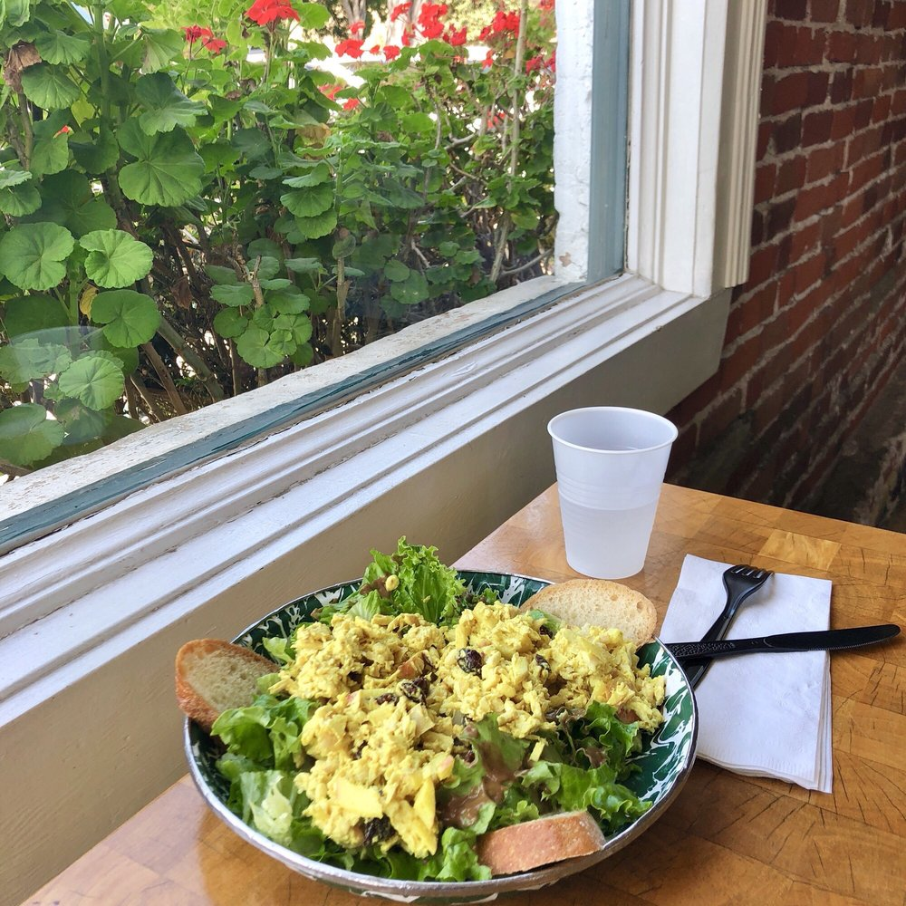

Information

Panino Hours
All Panino locations are open 7 days a week, 361 days a year.
Goleta
10am - 4pm, Monday - Saturday
11am - 3pm, Sunday
Montecito
10am - 4pm, Monday - Saturday
11am - 3pm, Sunday
Los Olivos
10am - 4pm, Monday - Sunday
Santa Barbara
10am - 4pm, Monday - Saturday
11am - 3pm, Sunday
Solvang
11am - 3:30pm, Monday - Friday
11am - 4pm, Weekends
Santa Ynez
10am - 4pm, Monday - Sunday
Panino locations are closed on New Years Day, Thanksgiving, Christmas Eve and Christmas Day.
Phone Orders
We welcome phone orders in all of our locations. Please allow at least 10 - 15 minutes for small orders and for larger orders please call as early in the day as possible. We ask that orders of 15 people or more be placed at least a day before. For very large orders be sure and ask for a manager who will be happy to assist you with the details.
Catering
Panino is happy to cater your next group gathering, party or corporate function. Contact a manager for the location nearest to you. We deliver, but we do have a order minimum. Ask the location manager for details.
Awards
SB Independent Reader’s Poll Winner Best Sandwiches 2005
SB Independent Reader’s Poll Winner Best Sandwiches 2006
SB Independent Reader’s Poll Winner Best Sandwiches 2007
Santa Barbara News-Press Reader’s Choice Finalist 2006
Santa Barbara News-Press Reader’s Choice Winner 2007
SantaBarbara.com Reader’s Choice Winner Best Sandwiches 2007
SantaBarbara.com Reader’s Choice Winner Best Sandwiches 2008
Santa Ynez Valley News Winner Best Sandwiches 2006
Santa Ynez Valley News Winner Best Sandwiches 2007